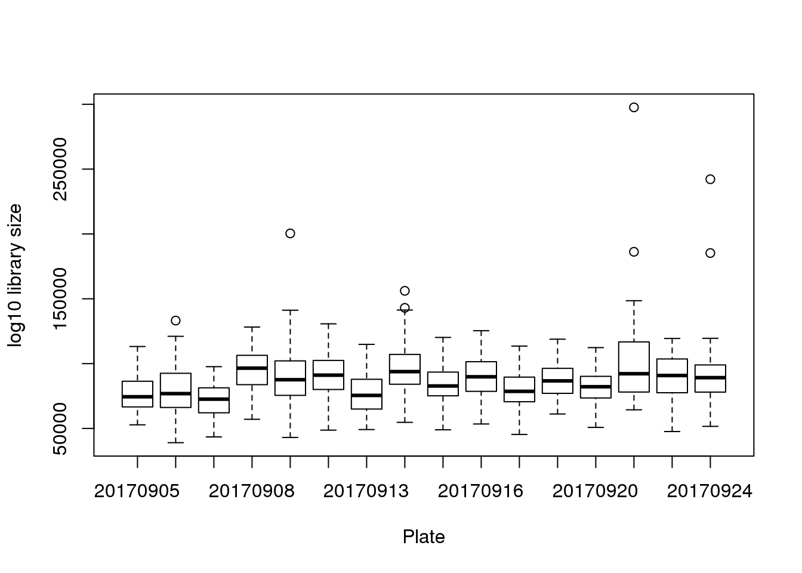
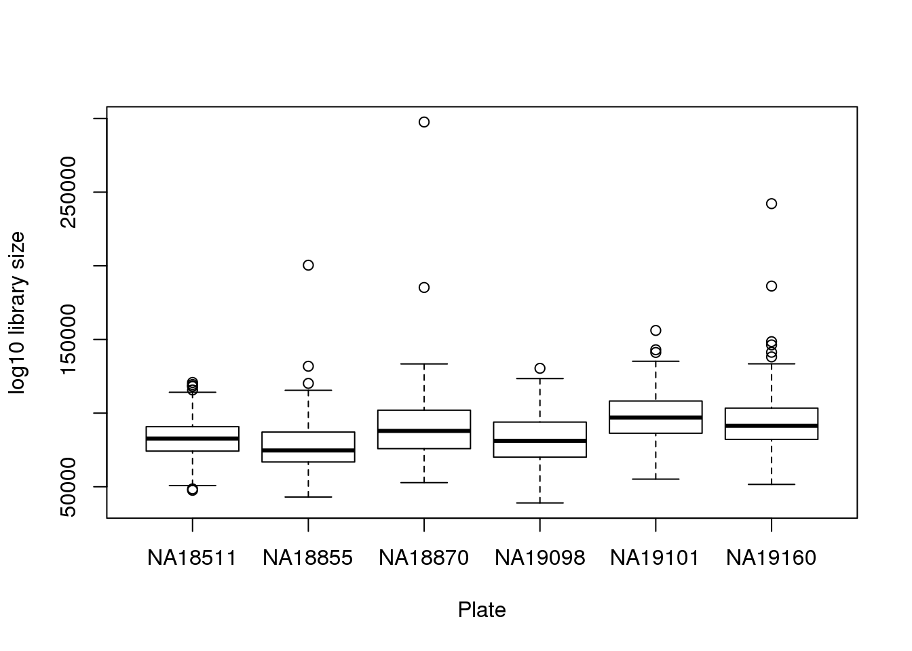
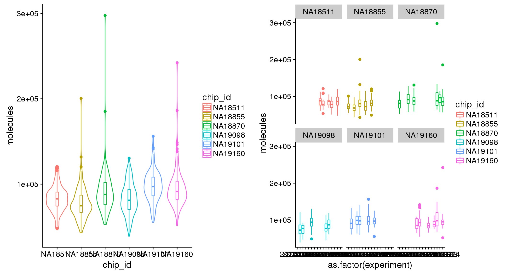
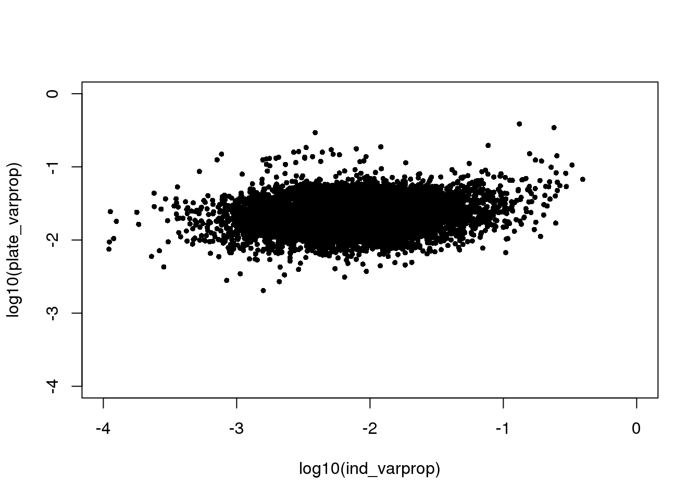
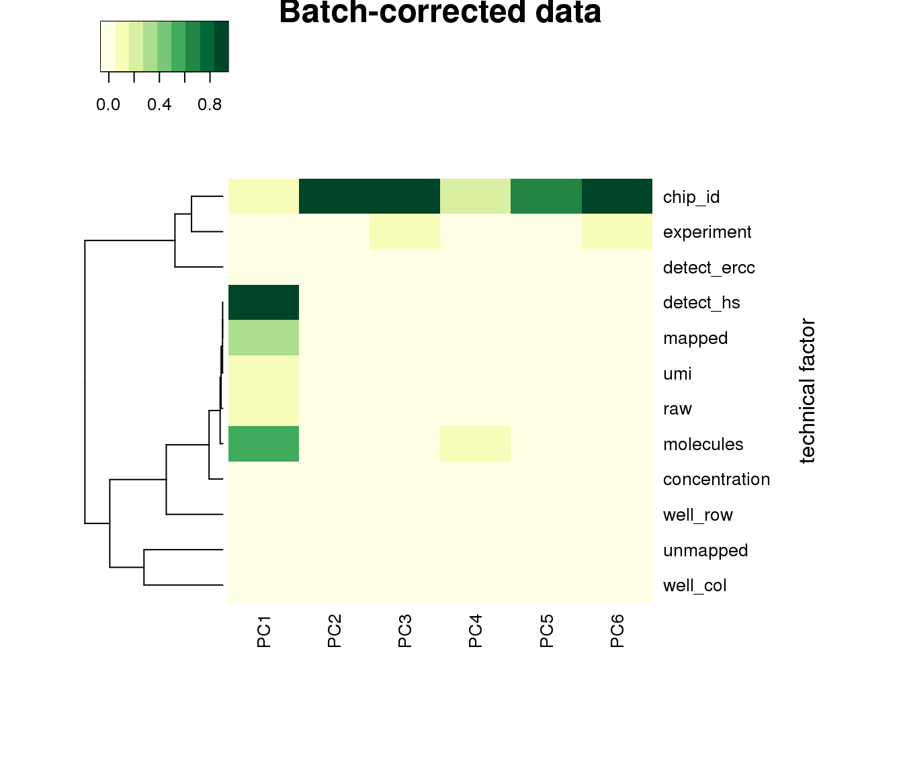
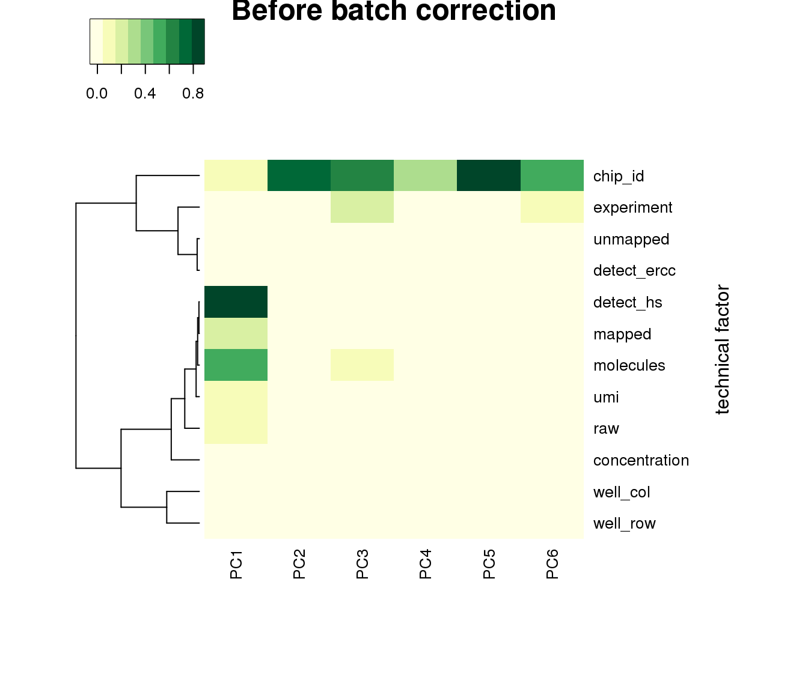

Last updated: 2018-06-27
Code version: Unavailable. Install git2r package to enable.
\(~\)
library(data.table)
library(dplyr)
library(ggplot2)
library(cowplot)
library(wesanderson)
library(RColorBrewer)
library(Biobase)
library(scales)
library(stringr)
library(heatmap3)
# note that ibd is not in the fucci-seq conda environment
library(ibd)Read in filtered data.
df <- readRDS(file="../data/eset-filtered.rds")
pdata <- pData(df)
fdata <- fData(df)
counts <- exprs(df)library size variation
boxplot(pdata$molecules~pdata$experiment,
xlab = "Plate", ylab = "log10 library size")
boxplot(pdata$molecules~pdata$chip_id,
xlab = "Plate", ylab = "log10 library size")
counts to log2cpm
log2cpm <- t(log2(1+(10^6)*(t(counts)/pdata$molecules)))save log2cpm
saveRDS(log2cpm, file = "../output/seqdata-batch-correction.Rmd/log2cpm.rds")convert sample well to two labels: rows and columns
pdata$well_row <- str_sub(pdata$well,1,1)
pdata$well_col <- str_sub(pdata$well,2,3)total molecules significant differs between individuals and batch
ibd_mol <- aov.ibd(log10(molecules)~factor(chip_id)+factor(experiment),data=pdata)
per gene log2cpm anova
ibd_genes <- lapply(1:nrow(log2cpm), function(i) {
aov.ibd(log2cpm[i,]~factor(chip_id)+factor(experiment),data=pdata)
})
saveRDS(ibd_genes, file = "../output/seqdata-batch-correction.Rmd/ibd-genes.rds")This seems to suggest that there’s no relationship between proportion of variance explained by indivdiual and by plate. Note that in these per-gene analysis, intercept explains a significant large portion of the variance, suggesting an overall large deviation of sample log2cpm from the mean.
ibd_genes <- readRDS("../output/seqdata-batch-correction.Rmd/ibd-genes.rds")
ind_varprop <- sapply(ibd_genes, function(x) x[[1]]$`Sum Sq`[2]/sum(x[[1]]$`Sum Sq`))
plate_varprop <- sapply(ibd_genes, function(x) x[[1]]$`Sum Sq`[3]/sum(x[[1]]$`Sum Sq`))
plot(log10(ind_varprop), log10(plate_varprop), xlim=c(-4,0), ylim=c(-4,0),
pch=16, cex=.7)
Estimate plate effect
# make contrast matrix
n_plates <- uniqueN(pdata$experiment)
contrast_plates <- matrix(-1, nrow=n_plates, ncol=n_plates)
diag(contrast_plates) <- n_plates-1
log2cpm.adjust <- log2cpm
for (i in 1:nrow(log2cpm)) {
ibd_exp <- aov.ibd(log2cpm[i,]~factor(chip_id)+factor(experiment),
data=pdata, spec="experiment", contrast=contrast_plates)
ibd_est <- ibd_exp$LSMEANS
exps <- unique(pdata$experiment)
for (j in 1:uniqueN(exps)) {
exp <- exps[j]
ii_exp <- which(pdata$experiment == exp)
est_exp <- ibd_est$lsmean[which(ibd_est$experiment==exp)]
log2cpm.adjust[i,ii_exp] <- log2cpm[i,ii_exp] - est_exp
}
}
saveRDS(log2cpm.adjust, file = "../output/seqdata-batch-correction.Rmd/log2cpm.adjust.rds")log2cpm.adjust <- readRDS("../output/seqdata-batch-correction.Rmd/log2cpm.adjust.rds")PCA after adjustment. Somehow now well has significant contribution to PC1…
log2cpm.adjust_sub <- log2cpm.adjust[,which(colnames(log2cpm.adjust) %in% rownames(pdata))]
pdata_sub <- pdata[which(rownames(pdata) %in% colnames(log2cpm.adjust)),]
log2cpm.adjust_sub <- log2cpm.adjust_sub[,match(rownames(pdata_sub),
colnames(log2cpm.adjust_sub))]
all.equal(rownames(pdata_sub), colnames(log2cpm.adjust_sub))[1] TRUEpca_log2cpm_adjust <- prcomp(t(log2cpm.adjust_sub), center = TRUE)
covariates <- pdata_sub %>% dplyr::select(experiment, well_row, well_col, chip_id,
concentration, raw:unmapped,
starts_with("detect"), molecules)
## look at the first 6 PCs
pcs <- pca_log2cpm_adjust$x[, 1:6]
## generate the data
get_r2 <- function(x, y) {
stopifnot(length(x) == length(y))
model <- lm(y ~ x)
stats <- summary(model)
return(stats$adj.r.squared)
}
r2 <- matrix(NA, nrow = ncol(covariates), ncol = ncol(pcs),
dimnames = list(colnames(covariates), colnames(pcs)))
for (cov in colnames(covariates)) {
for (pc in colnames(pcs)) {
r2[cov, pc] <- get_r2(covariates[, cov], pcs[, pc])
}
}
## plot heatmap
heatmap3(r2, cexRow=1, cexCol=1, margins=c(8,8), scale = "none",
col=brewer.pal(9,"YlGn"), showColDendro = F, Colv = NA,
ylab="technical factor", main = "Batch-corrected data")
PCA before adjustment.
pca_log2cpm <- prcomp(t(log2cpm), center = TRUE)
covariates <- pdata %>% dplyr::select(experiment, well_row, well_col, chip_id,
concentration, raw:unmapped,
starts_with("detect"), molecules)
## look at the first 6 PCs
pcs <- pca_log2cpm$x[, 1:6]
## generate the data
get_r2 <- function(x, y) {
stopifnot(length(x) == length(y))
model <- lm(y ~ x)
stats <- summary(model)
return(stats$adj.r.squared)
}
r2 <- matrix(NA, nrow = ncol(covariates), ncol = ncol(pcs),
dimnames = list(colnames(covariates), colnames(pcs)))
for (cov in colnames(covariates)) {
for (pc in colnames(pcs)) {
r2[cov, pc] <- get_r2(covariates[, cov], pcs[, pc])
}
}
## plot heatmap
heatmap3(r2, cexRow=1, cexCol=1, margins=c(8,8), scale = "none",
col=brewer.pal(9,"YlGn"), showColDendro = F, Colv = NA,
ylab="technical factor", main = "Before batch correction")
R version 3.4.3 (2017-11-30)
Platform: x86_64-pc-linux-gnu (64-bit)
Running under: Scientific Linux 7.4 (Nitrogen)
Matrix products: default
BLAS/LAPACK: /software/openblas-0.2.19-el7-x86_64/lib/libopenblas_haswellp-r0.2.19.so
locale:
[1] LC_CTYPE=en_US.UTF-8 LC_NUMERIC=C
[3] LC_TIME=en_US.UTF-8 LC_COLLATE=en_US.UTF-8
[5] LC_MONETARY=en_US.UTF-8 LC_MESSAGES=en_US.UTF-8
[7] LC_PAPER=en_US.UTF-8 LC_NAME=C
[9] LC_ADDRESS=C LC_TELEPHONE=C
[11] LC_MEASUREMENT=en_US.UTF-8 LC_IDENTIFICATION=C
attached base packages:
[1] parallel stats graphics grDevices utils datasets methods
[8] base
other attached packages:
[1] ibd_1.2 multcompView_0.1-7 lsmeans_2.27-61
[4] car_2.1-6 MASS_7.3-50 lpSolve_5.6.13
[7] heatmap3_1.1.1 stringr_1.2.0 scales_0.5.0
[10] Biobase_2.38.0 BiocGenerics_0.24.0 RColorBrewer_1.1-2
[13] wesanderson_0.3.6 cowplot_0.9.2 ggplot2_2.2.1
[16] dplyr_0.7.4 data.table_1.11.4
loaded via a namespace (and not attached):
[1] fastcluster_1.1.24 zoo_1.8-1 splines_3.4.3
[4] lattice_0.20-35 colorspace_1.3-2 htmltools_0.3.6
[7] yaml_2.1.16 mgcv_1.8-22 survival_2.41-3
[10] rlang_0.1.6 pillar_1.1.0 nloptr_1.0.4
[13] glue_1.2.0 bindrcpp_0.2 multcomp_1.4-8
[16] bindr_0.1 plyr_1.8.4 MatrixModels_0.4-1
[19] munsell_0.4.3 gtable_0.2.0 mvtnorm_1.0-8
[22] coda_0.19-1 codetools_0.2-15 evaluate_0.10.1
[25] labeling_0.3 knitr_1.18 SparseM_1.77
[28] quantreg_5.34 pbkrtest_0.4-7 TH.data_1.0-8
[31] Rcpp_0.12.17 xtable_1.8-2 backports_1.1.2
[34] lme4_1.1-15 digest_0.6.15 stringi_1.1.6
[37] grid_3.4.3 rprojroot_1.3-2 tools_3.4.3
[40] sandwich_2.4-0 magrittr_1.5 lazyeval_0.2.1
[43] tibble_1.4.2 pkgconfig_2.0.1 Matrix_1.2-14
[46] estimability_1.2 assertthat_0.2.0 minqa_1.2.4
[49] rmarkdown_1.8 R6_2.2.2 nnet_7.3-12
[52] nlme_3.1-131 compiler_3.4.3 This R Markdown site was created with workflowr